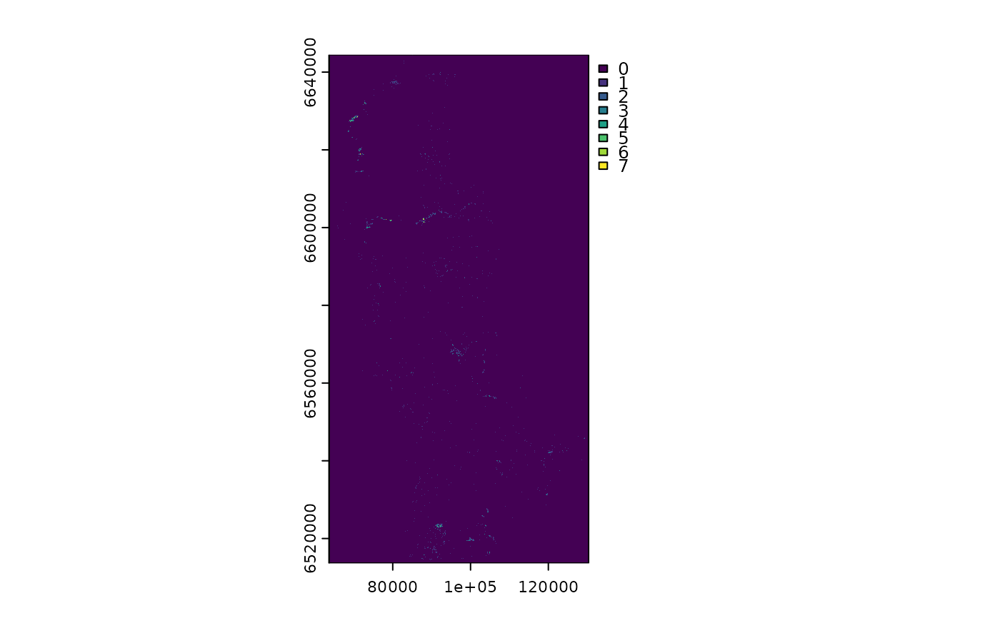
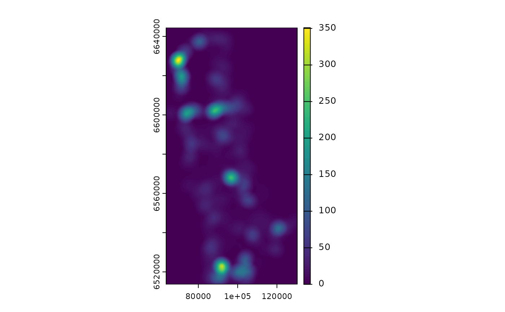

Compute Zone of Influence for points and annotate them to points using SQL
Source:R/calc_zoi_sql.R
calc_zoi_sql.RdThis function computes the zone of influence (ZOI) for a set of points
(typically a type of indrastructure, defined by the infrastructure_layer parameter)
and extracts their values at given location (defined by the layer input_points),
using a SQL query into a database (e.g. PostgreSQL or duckdb). Differently from
the calc_zoi functions, it does not compute the ZOI for the whole study area,
but only for the positions where the input points are located. For optimal use,
both input_points and infrastructure_layer should be spatially indexed, so
only closeby points are evaluated and the query is completed fast.
Usage
calc_zoi_sql(
con,
input_points,
infrastructure_layer,
radius = 100,
type = c("circle", "Gauss", "exp_decay", "bartlett", "threshold")[1],
zoi_metric = c("cumulative", "nearest")[1],
input_id = "id",
input_geom = "geom",
infra_geom = "geom",
output_type = c("cumulative_zoi", "density")[1],
zoi_limit = 0.05,
output_column_name = paste0(infrastructure_layer, "_", output_type, "_bartlett",
radius),
output_table = NULL,
condition = "",
limit = 1e+15,
verbose = FALSE
)Arguments
- con
connection to a database.
- input_points
[character]
Name of the input table of points to be annotated (within the connectioncon, a database), in the formattable_nameorschema_name.table_name.- infrastructure_layer
[character]
Name of the infrastructure covariate table for which the zone of influence will be computed (within the connectioncon, a database), in the formattable_nameorschema_name.table_name.- radius
[numeric=100]
Radius or scale of zone of influence, used to calculate the cumulative ZOI and density. The radius represent the distance at which the ZOI vanishes or goes below a given minimum limit valuezoi_limit. ### CHECK THAT, so far only bartlett- input_id
[character]
Name of a ID column from theinput_pointstable.- input_geom
[character]
Name of the geometry column from theinput_pointstable.- infra_geom
[character]
Name of the geometry column from theinfrastructure_layertable.- output_type
[character]- output_column_name
[character]
Examples
library(oneimpact)
library(DBI)
library(dplyr)
#>
#> Attaching package: ‘dplyr’
#> The following objects are masked from ‘package:terra’:
#>
#> intersect, union
#> The following objects are masked from ‘package:stats’:
#>
#> filter, lag
#> The following objects are masked from ‘package:base’:
#>
#> intersect, setdiff, setequal, union
library(sf)
library(terra)
# install.packages("duckdb")
library(duckdb)
#> Error in library(duckdb): there is no package called ‘duckdb’
#---
# set up connection and files
# connection - in memory
con <- DBI::dbConnect(duckdb())
#> Error in h(simpleError(msg, call)): error in evaluating the argument 'drv' in selecting a method for function 'dbConnect': could not find function "duckdb"
DBI::dbExecute(con, "INSTALL spatial from core_nightly; LOAD spatial;")
#> Error in h(simpleError(msg, call)): error in evaluating the argument 'conn' in selecting a method for function 'dbExecute': object 'con' not found
# write vector of reindeer points to database
# load data in R
data("reindeer")
# register link to data in duckdb
duckdb::duckdb_register(con, "reindeer", reindeer)
#> Error in loadNamespace(x): there is no package called ‘duckdb’
# create spatial object in duckdb
DBI::dbExecute(con, "create or replace table reindeer_spat as (select row_number() over () as id, * exclude(x, y), ST_POINT(x,y) as geom from reindeer)")
#> Error in h(simpleError(msg, call)): error in evaluating the argument 'conn' in selecting a method for function 'dbExecute': object 'con' not found
duckdb::duckdb_unregister(con, "reindeer") # and forget the original dataframe
#> Error in loadNamespace(x): there is no package called ‘duckdb’
# check
dplyr::tbl(con, "reindeer_spat")
#> Error: object 'con' not found
# add index id and spatial index
DBI::dbExecute(con, "CREATE UNIQUE INDEX reindeer_gid ON reindeer_spat (id);")
#> Error in h(simpleError(msg, call)): error in evaluating the argument 'conn' in selecting a method for function 'dbExecute': object 'con' not found
DBI::dbExecute(con, "CREATE INDEX reindeer_geometry ON reindeer_spat USING rtree (geom);")
#> Error in h(simpleError(msg, call)): error in evaluating the argument 'conn' in selecting a method for function 'dbExecute': object 'con' not found
# write vector of cabin points to database - from file
DBI::dbExecute(con, "create or replace table cabins as select * from st_read('inst/vector/reindeer_cabins.gpkg')")
#> Error in h(simpleError(msg, call)): error in evaluating the argument 'conn' in selecting a method for function 'dbExecute': object 'con' not found
# check
dplyr::tbl(con, "cabins")
#> Error: object 'con' not found
# add spatial index
DBI::dbExecute(con, "CREATE INDEX cabins_geom ON cabins USING rtree (geom);")
#> Error in h(simpleError(msg, call)): error in evaluating the argument 'conn' in selecting a method for function 'dbExecute': object 'con' not found
# compute ZOI of cabins and extract for reindeer points
cum_zoi_cabins <- calc_zoi_sql(con,
input_points = "reindeer_spat",
infrastructure_layer = "cabins",
radius = 5000,
type = "bartlett", zoi_metric = "cumulative",
input_id = "id",
input_geom = "geom", infra_geom = "geom",
output_table = NULL,
limit = 100,
verbose = TRUE)
#> Error in h(simpleError(msg, call)): error in evaluating the argument 'conn' in selecting a method for function 'sqlInterpolate': object 'con' not found
cum_zoi_cabins
#> Error: object 'cum_zoi_cabins' not found
#-----------------
# compare to the raster approach
# compute ZOI
f <- system.file("vector/reindeer_cabins.gpkg", package = "oneimpact")
cabins <- terra::vect(f)
rr <- terra::rast(xmin = terra::ext(cabins)[1], resolution = 100,
extent = terra::ext(cabins), crs = terra::crs(cabins))
cabins_count <- terra::rasterize(cabins, rr, fun = length)
cabins_count <- terra::ifel(is.na(cabins_count), 0, cabins_count)
plot(cabins_count)

cumzoi_linear <- calc_zoi_cumulative(cabins_count, type = "bartlett", radius = 5000)
plot(cumzoi_linear)

# extract
reindeer_cabins <- terra::extract(cumzoi_linear, terra::vect(rein_spat))
#> Error in h(simpleError(msg, call)): error in evaluating the argument 'y' in selecting a method for function 'extract': error in evaluating the argument 'x' in selecting a method for function 'vect': object 'rein_spat' not found
plot(cumzoi_linear)
plot(terra::vect(rein_spat), add = T)
#> Error in h(simpleError(msg, call)): error in evaluating the argument 'x' in selecting a method for function 'plot': error in evaluating the argument 'x' in selecting a method for function 'vect': object 'rein_spat' not found
# approximately the same
cbind(reindeer_cabins, dplyr::arrange(cum_zoi_cabins, gid))
#> Error: object 'reindeer_cabins' not found